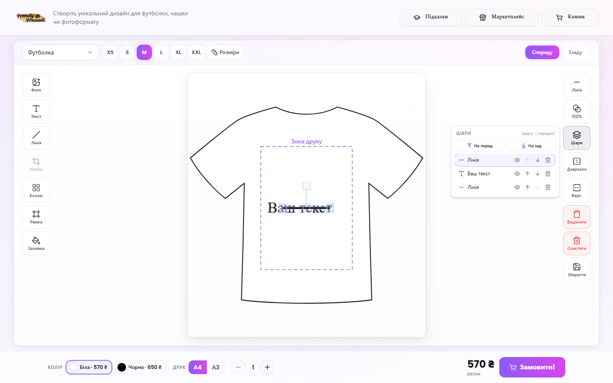
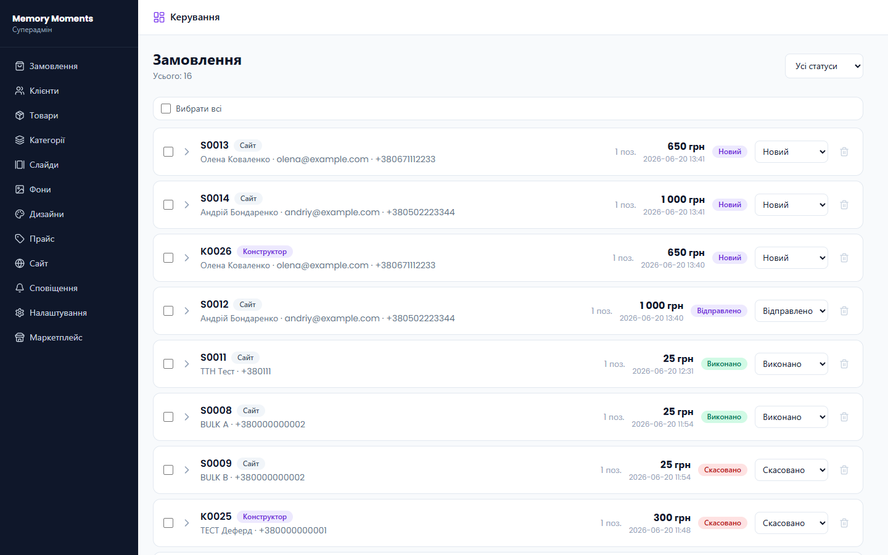
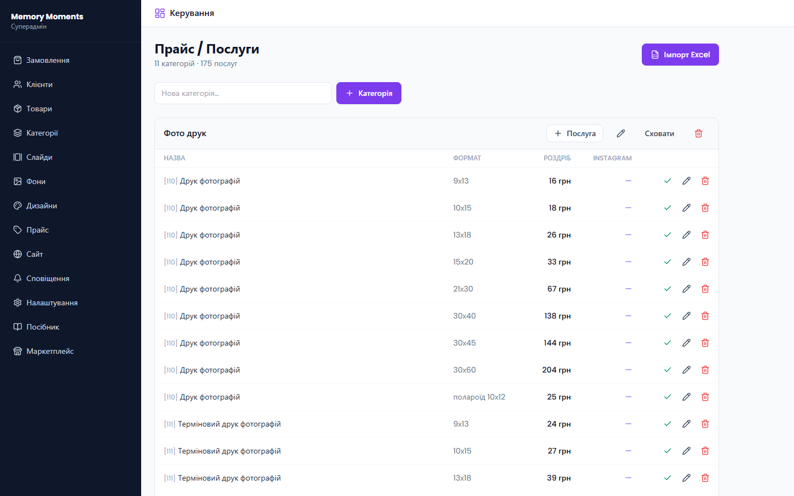
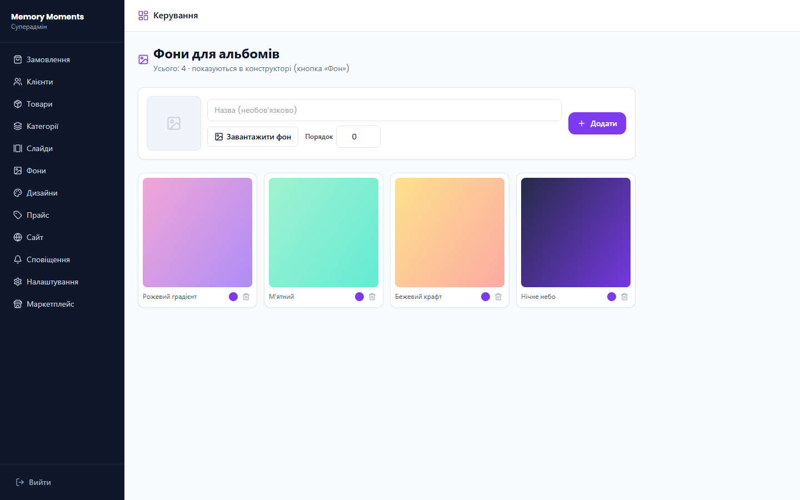
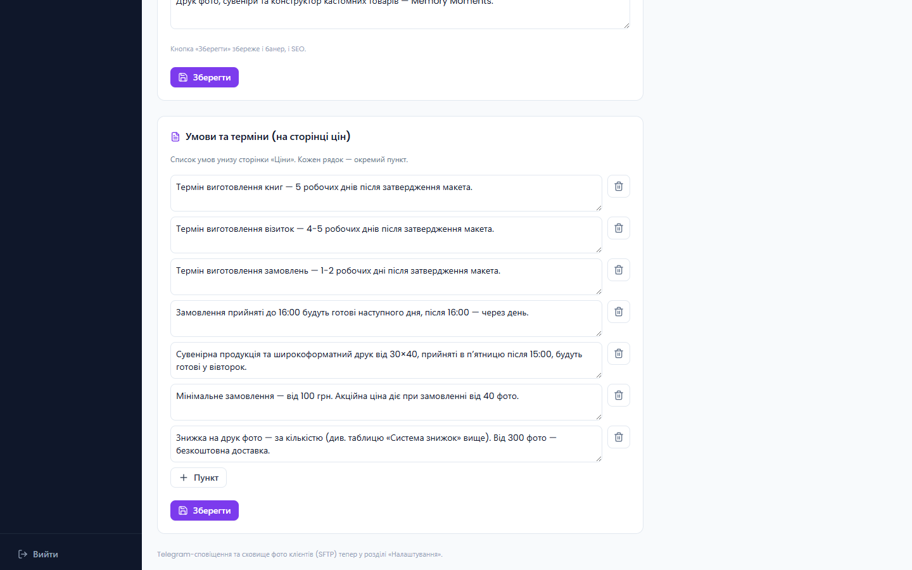
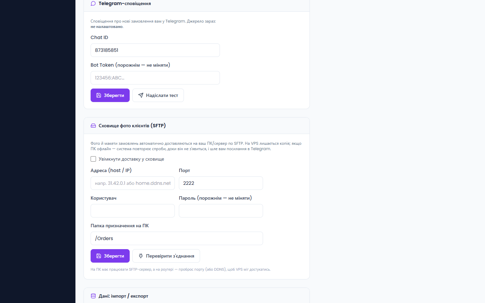

Подсказки. Кнопка «Підказки» (Подсказки) в шапке запускает интерактивный тур по конструктору — удобно показать новому сотруднику.
2.2 Выбор товара и размеров
В левом верхнем углу — список товаров (Футболка, Чашка, Фотопечать, Холст, Slim/Print Book и др.). Рядом появляются соответствующие опции: размеры футболки, формат фотокниги, тип бумаги и т. д. Кнопка «Розміри» (Размеры) показывает таблицу размеров.
2.3 Инструменты (левая панель)
Инструмент
Назначение
Фото
Загрузить изображение (или перетащить на холст). Для печати — оригинал в высоком качестве.
Текст
Добавить надпись. Шрифт, цвет, размер — в панели текста над холстом.
Лінія
Добавить линию/разделитель.
Маска
Обрезать фото по форме (круг, сердце и т. д.).
Колаж
Готовые раскладки на несколько фото. Нажмите ячейку (+) и добавьте фото; его можно двигать внутри ячейки.
Рамка
20 декоративных рамок. Рамка всегда остаётся поверх фото.
Заливка
Однотонный фон-заливка макета.
Фон(для альбомов)
Готовые фоны для фотокниг (управляются из админки). Ложатся нижним слоем на весь формат.
2.4 Свойства объекта (правая панель)
Появляются, когда выбран объект на макете:
Стиль — обводка/тень/цвет (в зависимости от объекта).
Прозор. (Прозрачность) — ползунок 0–100%.
Шари (Слои) — полная панель слоёв (см. 2.5).
Дзеркало / Верт. — отразить по горизонтали/вертикали.
Видалити / Очистити — удалить объект / очистить весь макет.
Зберегти (Сохранить) — сохранить текущий дизайн.
2.5 Панель «Шари» (Слои)
Кнопка «Шари» открывает список всех объектов макета (сверху — передний план). Для каждого слоя:
Клик по строке — сделать слой активным;
👁 — показать/скрыть;
↑ / ↓ — поднять/опустить в порядке;
🗑 — удалить;
«На перед / На зад» — быстро переместить выбранный слой.
Важно. Управлять на макете (двигать, масштабировать) можно только активным слоем. Остальные объекты временно «заблокированы», поэтому при наложении фото вы не схватите случайно чужой элемент. Чтобы переключиться — кликните другой слой в панели или пустое место на холсте.

Панель «Шари»: список объектов, показать/скрыть, порядок, удаление; активный слой подсвечен
2.6 Фотокниги и «много фото»
Для Slim Book / Print Book появляются: выбор формата, количество разворотов/листов и кнопка «Фото розворотів» (Фото разворотов — массовая загрузка). Под холстом — карусель разворотов: миниатюры, которые можно перетаскивать, чтобы изменить порядок; клик переключает редактирование. Кнопка «Передперегляд» (Предпросмотр) показывает книгу разворотами.
Для фотоформатов есть режим «Багато фото» (Много фото): загружаете пачку — каждое фото становится отдельной редактируемой страницей, цена считается по количеству.
Внизу — цена в реальном времени (зависит от товара, цвета, формата, количества, скидок). Кнопка Замовити! добавляет дизайн в корзину и открывает оформление. При подготовке больших заказов (например, 200 фото) на кнопке виден прогресс «Готуємо N/N…» (Готовим), а во время отправки на сервер — процент выгрузки.
3. Админ-панель
3.1 Вход
Админка — по адресу /admin. Вход по email и паролю. Роли: суперадмин (полный доступ) и админ (доступ по правам, которые вы настраиваете).
3.2 Заказы (Замовлення)
Список всех заказов с фильтром по статусу. Для каждого: номер, источник (Конструктор/Сайт), клиент, сумма, дата, статус.

Раздел «Замовлення» (Заказы): список, статусы, переключатель статуса и корзина удаления
Статусы
Новий (Новый) ОплаченоВідправлено (Отправлено) Виконано (Выполнено) Скасовано (Отменено). При смене статуса клиенту автоматически идёт email (см. 4.2).
Відправлено (Отправлено) — откроется окно для номера ТТН (Нова Пошта). Клиент получит его в письме с кнопкой «Отследить».
Скасовано (Отменено) — откроется окно для причины, которую клиент увидит в письме.
Массовые действия
Отметьте несколько заказов галочками (или «Вибрати всі» — Выбрать все) — появится панель: Виконано (Выполнено), Скасувати (Отменить), Видалити (Удалить — только суперадмин, без письма клиенту).
Клик по стрелке разворачивает заказ: позиции с превью, файлы для печати, данные клиента, ТТН, статус доставки фото на ПК, кнопки «Друк» (Печать), «Скачати всі фото (ZIP)» и (для фотокниг) «Архів книги».
Детали заказа: статус доставки, печать, скачивание фото/макетов, ТТН
3.3 Клиенты (Клієнти)
База клиентов собирается автоматически из заказов (имя, телефон, email). Удобно для повторных обращений и рассылок.
3.4 Товары, Категории, Прайс
Товари (Товары) — карточки товаров витрины (название, фото, цена, категория). Категорії (Категории) — разделы каталога (редактируемые плитки-иконки). Прайс — полный прайс услуг (фотопечать, полиграфия, широкоформат, сувениры, фотокниги), из которого конструктор берёт цены.
Товары

Прайс услуг
Excel. В «Налаштуваннях» (Настройки) есть импорт/экспорт прайса, категорий и товаров в формате Excel (.xlsx). Импорт только обновляет и добавляет — ничего не удаляет, поэтому цены конструктора не сломаются.
3.5 Слайды и Фоны
Слайди (Слайды) — баннеры-карусели на главной. Фони (Фоны) — готовые фоны для фотокниг, которые появляются в конструкторе под кнопкой «Фон» (загрузите изображение, название, включите).

«Фони» (Фоны): готовые фоны альбомов для конструктора
3.6 Дизайны (Дизайни)
Библиотека готовых дизайнов/шаблонов, которые можно предлагать клиентам.
3.7 Сайт
Бизнес-настройки витрины без участия разработчика:
Контакти та філії (Контакты и филиалы) — телефон, Instagram, Telegram, адреса, часы работы.
Доставка — способы (Нова Пошта / самовывоз) и отделения.
Знижки на фотодрук (Скидки на фотопечать) — пороги «от N фото → −X%».
Головний банер і SEO (Главный баннер и SEO) — заголовок, подпись, описание сайта.
Умови та терміни (Условия и сроки) — список условий внизу страницы цен (добавлять/редактировать строки).

«Сайт» → «Умови та терміни» (Условия и сроки): редактируемый список для страницы цен
3.8 Уведомления (Сповіщення)
Здесь включается push на устройство — уведомления о новых заказах приходят, даже когда админка закрыта. Нажмите «Увімкнути сповіщення» (Включить уведомления) на каждом устройстве (на телефоне — добавьте сайт «на главный экран»). Ниже — статус каналов Telegram и Email.
«Сповіщення» (Уведомления): push на устройство + статус каналов
3.9 Настройки (Налаштування)
Технические настройки (для суперадмина):
Профіль / Пароль — ваш email и смена пароля.
Користувачі адмінки (Пользователи) — добавить сотрудника и настроить ему права (просмотр/управление по разделам).
Email / SMTP — почта, с которой идут письма клиентам. Без неё письма не отправляются.
Telegram-сповіщення — Chat ID и токен бота; кнопка «Надіслати тест» (Отправить тест).
Очистка сховища (Очистка хранилища) — удаление старых файлов печати для освобождения места.

«Налаштування» (Настройки): Telegram-уведомления и хранилище фото клиентов (SFTP)
4. Как работает система (потоки)
4.1 Новый заказ
Клиент оформляет заказ в конструкторе или на сайте.
Сервер сохраняет его и мгновенно отвечает клиенту (тяжёлые файлы пишутся в фоне, поэтому страница не «висит»).
Вам приходит уведомление в Telegram и push.
Клиенту идёт email-подтверждение.
Фото и макеты доставляются на ваш ПК по SFTP.
4.2 Смена статуса → письмо клиенту
Статус
Что получает клиент
Оплачено
Письмо «Оплата получена».
Відправлено (Отправлено)
Письмо с номером ТТН и кнопкой «Отследить посылку».
Виконано (Выполнено)
Письмо «Заказ готов».
Скасовано (Отменено)
Письмо «Заказ отменён» с причиной.
Удаление
Письмо не отправляется.
Письма работают, только если настроен SMTP («Налаштування» → Email/SMTP).
4.3 Доставка фото на ПК (и запасной вариант)
Заказы с фото автоматически доставляются на ваш ПК через SFTP. Если ПК выключен — система повторяет попытки, пока он не появится, и один раз присылает вам в Telegram защищённую ссылку на скачивание ZIP с фото (прямо с нашего сервера). В деталях заказа виден статус: Фото доставлено на ПК / в очереди / ПК офлайн — ссылка отправлена.
4.4 Цены и скидки
Цены конструктора берутся из Прайса. Скидки на фотопечать — по количеству фото (настраиваются в «Сайт» → «Знижки»); сервер применяет наибольший подходящий порог.
5. Полезные советы
Не приходят письма клиентам? Проверьте SMTP в «Налаштуваннях» (должно быть «настроено»).
Не приходит push? Включите его в «Сповіщеннях» (Уведомления) на каждом устройстве; на телефоне — добавьте сайт «на главный экран».
Фото не на ПК? Проверьте «Сховище (SFTP)» → «Перевірити зʼєднання». Если ПК офлайн — воспользуйтесь ссылкой из Telegram или кнопкой «Скачати всі фото» в заказе.
Хотите изменить цены? Раздел «Прайс» или импорт Excel в «Налаштуваннях».
Готовые фоны для альбомов добавляются в «Фони» и сразу появляются в конструкторе.
Текст/условия на сайте меняются в «Сайт» без разработчика.
Memory Moments · memory-moments.online · Это руководство можно обновлять вместе с системой.